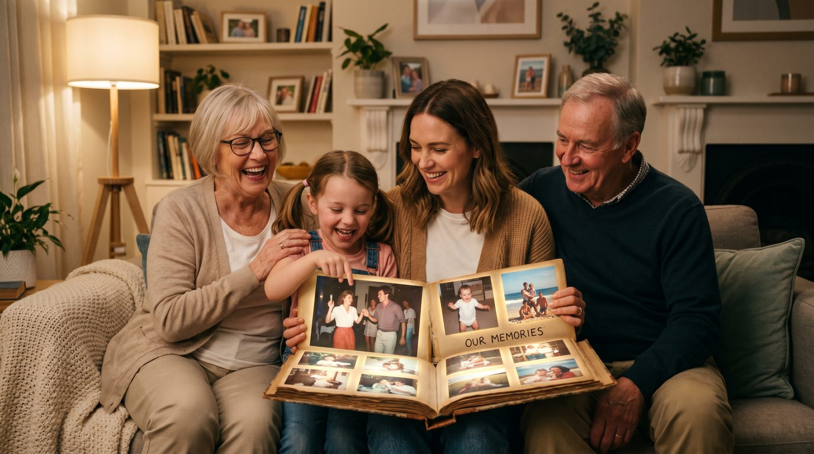

Семейный альбом — это кладезь воспоминаний, которые мы бережно храним. Но как сделать их ещё ярче? Оживите любимые фото с помощью AI видео и погрузитесь в атмосферу прошлого!
Оживить старые фотографии — это не просто дань моде, а возможность подарить близким нечто особенное. Представьте, как будет приятно вашим родителям получить старые снимки в видеоролике, где они улыбаются, как в молодости. Такой подарок к юбилею или годовщине точно не оставит равнодушным.
Семейный архив — это наша история, и оживление фото позволяет сделать её более доступной для будущих поколений. Младшие члены семьи смогут увидеть своих предков не только на статичных изображениях, но и в движении, что создаёт более глубокую связь с прошлым. Это также отличный способ сохранить воспоминания о тех, кого уже нет с нами.
При выборе фото для оживления важно учитывать несколько моментов. Во-первых, снимок должен быть достаточно резким и качественным, чтобы нейросеть могла корректно обработать его. Лучше всего подходят фотографии в анфас, где чётко видно лицо. Такие изображения позволяют добиться наиболее естественного результата.
Если у вас есть старые или повреждённые фотографии, их тоже можно использовать. Перед загрузкой в сервис рекомендуется отсканировать такие снимки и, при необходимости, слегка улучшить их резкость с помощью графических редакторов. Это повысит качество конечного видео и позволит избежать артефактов.
Создание видео с помощью VideoAI — это простой и увлекательный процесс, занимающий всего около 60 секунд. Для начала вам нужно посетить сайт botisk.ru и загрузить выбранное фото. Процесс не требует регистрации, что значительно экономит ваше время.
После загрузки система предложит вам выбрать тип движения: от лёгкой улыбки до более сложных движений глаз и головы. Первое видео для вас будет бесплатно, что позволит протестировать сервис без лишних затрат. Это отличная возможность оценить качество результата перед тем, как оформить платную услугу.
| Способ | Время | Цена | Результат |
|---|---|---|---|
| VideoAI | ~60 сек | Первое бесплатно, от 290р за 10 видео | Высокое качество, доступность |
| Студия | 1-2 недели | от 5000р | Профессионально, но долго |
| Фрилансер | 3-5 дней | от 1500р | Качество зависит от навыков |
| Зарубежные сервисы | ~5 мин | от $10 | Часто сложные интерфейсы |
Оживление фотографий с помощью AI — это не только возможность сохранить воспоминания, но и способ взглянуть на прошлое по-новому. Если вас заинтересовала эта тема, рекомендуем также прочитать нашу статью о том, как оживить старое фото, или узнать, как оживить фото дедушки. Для создания своего первого видео посетите наш генератор.
Без регистрации. Первое видео — бесплатно. Загрузите снимок — получите живое видео за 60 секунд.
Создать видео из фото →Процесс создания AI видео через VideoAI занимает около 60 секунд. Это быстро и удобно.
VideoAI обеспечивает высокое качество видео при условии, что исходное фото было достаточно резким и четким.
Да, повреждённые фото можно использовать. Рекомендуется их предварительно отсканировать и улучшить в графическом редакторе.